🌊 奋进号:深海
Endeavor: Deep Sea · 设计:Carl de Visser & Jarratt Gray · Burnt Island Games / Grand Gamers Guild 出版 · 1–4 人(官方中文规则书全文转录)
本页整理自微信公众号「张憬泽」《奋进号 深海 [Endeavor Deep Sea]》发布的《奋进号:深海》(Endeavor: Deep Sea,Carl de Visser & Jarratt Gray 设计,Burnt Island Games 与 Grand Gamers Guild 联合出版)中文规则书扫描件(中文翻译 & 排版:张憬泽)。全书 16 幅扫描图逐页全文转录,原书扫描图随文嵌入——点击任意图片即可放大查看。规则内容归 Burnt Island Games / Grand Gamers Guild 及版权方所有,转录仅供个人学习查阅。
整理说明:〔图标:……〕〔齿轮图标〕等表示此处为印刷图标/令牌图片,非文字;〔图 …〕说明为整理所拟。扫描件分辨率有限,以下小字无法确辨、如实标注〔?〕:扫描图 06 层级 5 括注中间二字(据「16 名专家」与层级 1–4 标注 5+4+3+2 推知为其余 2 名,但原文以图为准);扫描图 09 两处专家中文译名(卡面英文 REEF DIVER / FIELD RESEARCHER);扫描图 10 两个海域名末字(「冷水〔?〕」「盐水〔?〕」);扫描图 11 一处礁石区名首字;扫描图 12/13 三处图中英文地名;扫描图 16/17 三张任务目标卡粉色合作目标横幅数字与 HELP 卡角小字——横幅数字为两页交叉尽力辨认,带〔?〕者存疑,请以随文扫描图为准。原书用词不一与疑似排印问题均照录:「随即目标」(扫描图 17,他处作「随机」)、「冲击板」(他处作「影响板/影响面板」)、「日记牌/这本日记」(他处作「日志」)、「补给区/供应区/供给区」「储存区/储备区」「科技水平/技术水平」「场景表/情景表」并存、「花费一个下潜水标记」疑有衍字、「棋盘」疑为「棋子」。
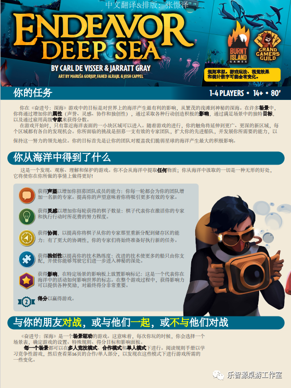
你的任务 1-4 PLAYERS • 14+ • 80'
你在《奋进号:深海》游戏中的目标是对世界上的海洋产生最有利的影响,从繁茂的浅滩到神秘的深海。在许多场景中,你将通过增加你的属性(声誉、灵感、协作和独创性),通过采取各种行动创造积极的影响,通过满足场景中的独特目标,以及通过雇用高级专家来获得分数。
在游戏开始时,只有靠近海洋表面的一小块区域可以进入。随着游戏的进行,你的触角将延伸到更广、更深的新区域,每个区域都有各自的发现机会。你所面临的挑战是招募一支有效的专家团队,扩大你的先进船队,并发展你所需要的能力,以保持这一努力的领先地位。你的目标首先是让你的团队对覆盖我们脆弱星球的海洋产生最大的积极影响。
你从海洋中得到了什么
这是一个发现、观察、理解和保护的游戏。你不会从海洋中提取任何物质;你从海洋中汲取的一切是一种无形的好处,它将使你在你所做的事情上做得更好!
获得声誉以增加你招募团队成员的能力:你每一轮都会为你的团队增加一名新的专家。提高你的声望意味着你将吸引更多有效的专家。
获得灵感以增加你每轮获得的棋子数量:棋子代表你在激活你的专家和执行行动时所花费的努力程度。
获得协调,以提高你将棋子从你的专家那里重新分配到储存区的能力:有了更大的协调性,你的专家们将始终准备好执行新的任务。
获得独创性以提高你的技术熟练度:改进的技术使更多的船只由你支配,并使你能够驾驶它们进一步进入神秘的深处。
获得影响,在特定场景的影响板上放置影响标记:这是一个代表你在海洋中的活动如何影响世界的标志。在整个游戏过程中,获得影响力可以提供各种奖励,对最终得分非常重要。
得分以赢得游戏。
与你的朋友对战,或与他们一起,或不与他们对战
《奋进号:深海》是一个场景驱动的游戏。这意味着,每次你玩的时候,你会选择一个场景表,确定游戏的设置、特殊规则、得分目标和影响面板。
每一个场景都可以在多人竞技模式、合作模式和单人模式下进行。阅读规则手册以学习竞争性游戏,然后查看第16页的合作/单人部分,以发现在这些模式下进行游戏所需的一些变化。
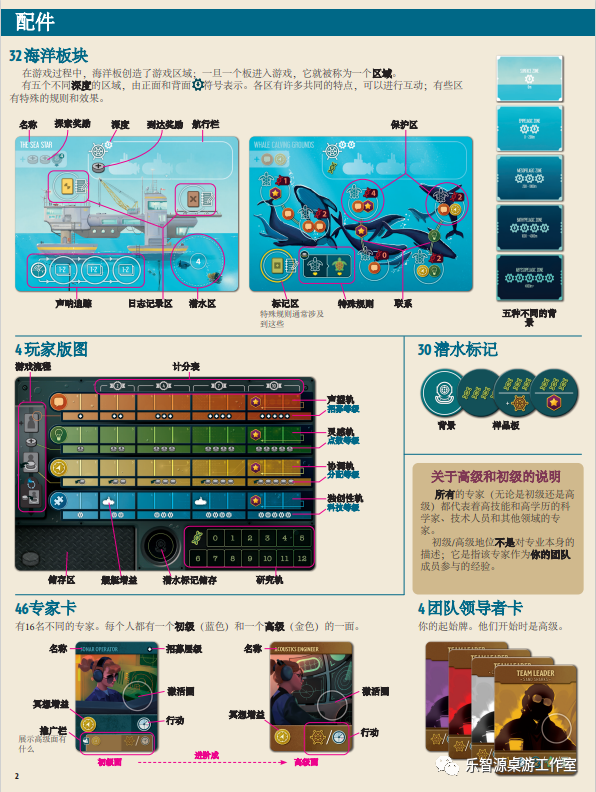
配件
32 海洋板块
在游戏过程中,海洋板创造了游戏区域:一旦一个板进入游戏,它就被称为一个区域。
有五个不同深度的区域,由正面和背面〔齿轮图标〕符号表示。各区有许多共同的特点,可以进行互动;有些区有特殊的规则和效果。
名称
探索奖励
深度
到达奖励
航行栏
声呐追踪
日志记录区
潜水区
保护区
标记区
特殊规则通常涉及到这些
特殊规则
联系
五种不同的背景
4 玩家版图
游戏流程
计分表
声望轨
招募等级
灵感轨
点数等级
协调轨
分配等级
独创性轨
科技等级
储存区
采挖增益
潜水标记储存
研究轨
30 潜水标记
背景
样品板
关于高级和初级的说明
所有的专家(无论是初级还是高级)都代表着高技能和高学历的科学家、技术人员和其他领域的专家。
初级/高级地位不是对专业本身的描述;它是指该专家作为你的团队成员参与的经验。
46 专家卡
有16名不同的专家。每个人都有一个初级(蓝色)和一个高级(金色)的一面。
名称
招募层级
激活圈
采挖增益
行动
推广栏
展示高级面有什么
名称
激活圈
采挖增益
行动
初始面
进阶点
高级面
4 团队领导者卡
你的起始牌。他们开始时是高级。
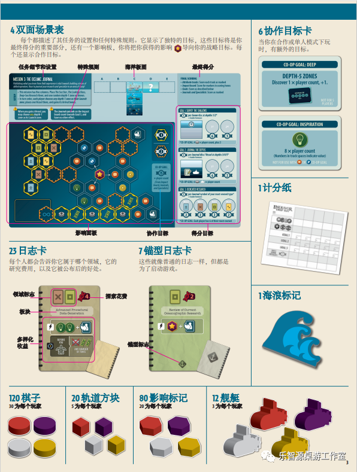
4 双面场景表
每个都描述了其任务的设置和任何特殊规则。它显示了独特的目标，这些目标将是你最终得分的重要部分，还有一个影响板，你将把你获得的影响 ⭐ 导向你的战略目标。每个还显示协作目标。
（场景表示意图）
任务细节和设置
特殊规则
海洋板图
最终得分
影响面板
协作目标
得分目标
23 日志卡
每个人都会告诉你它属于哪个领域，它的研究费用，以及它被公布后的好处。
（日志卡示意图）
领域标志
探索花费
板块
多样化收益
7锚型日志卡
这些就像普通的日志一样，但都是为了启动游戏。
（锚型日志卡示意图）
舰艇标志
6 协作目标卡
当你在合作或单人模式下玩时，有额外的目标。
（协作目标卡示意图）
1计分纸
（计分纸示意图）
1海浪标记
（海浪标记示意图）
120 棋子
30 为每个玩家
20 轨道方块
5 为每个玩家
80 影响标记
20 为每个玩家
12 舰艇
3 为每个玩家
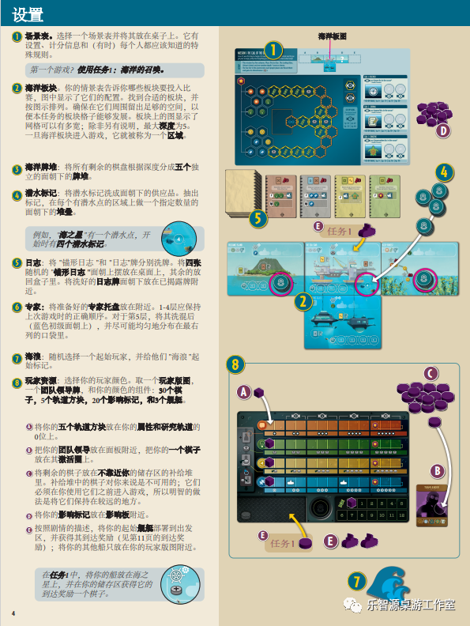
设置
① 场景表。选择一个场景表并将其放在桌子上。它有设置、计分信息和（有时）每个人都应该知道的特殊规则。
第一个游戏？使用任务1：海洋的召唤。
② 海洋板块。你的情景表告诉你哪些板块要投入比赛，图中显示了它们的配置。找到合适的板块，并按图示排列。确保在它们周围留出足够的空间，以便本任务的板块格子能够发展。板块上的图显示了网格可以有多宽；除非另有说明，最大深度为5。一旦海洋板块进入游戏，它就被称为一个区域。
③ 海洋牌堆：将所有剩余的棋盘根据深度分成五个独立的面朝下的牌堆。
④ 潜水标记：将潜水标记洗成面朝下的供应品。抽出标记，在每个有潜水水点的区域上做一个指定数量的面朝下的堆叠。
例如，“海之星”有一个潜水水点，开始时有四个潜水标记。
⑤ 日志：将“锚形日志”和“日志”牌分别洗牌。将四张随机的“锚形日志”面朝上摆放在桌面上，其余的放回盒子里。将洗好的日志牌面朝下放在已揭露牌附近。
⑥ 专家：将准备好的专家托盘放在附近。1-4层应保持上次游戏时的正确顺序。对于第5层，将其洗混后（蓝色初级面朝上），并尽可能均匀地分布在最右列的口袋里。
⑦ 海浪：随机选择一个起始玩家，并给他们“海浪”起始标记。
⑧ 玩家资源：选择你的玩家颜色。取一个玩家板图，一个团队领导牌，和你的颜色的组件：30个棋子，5个轨道方块，20个影响标记，和3个舰艇。
❶ 将你的五个轨道方块放在你的属性和研究轨道的 0 位上。
❷ 把你的团队领导放在面板附近，把你的一个棋子放在其激活圈上。
❸ 将剩余的棋子放在不靠近你的储存区的补给堆里。补给堆中的棋子对你来说是不可用的；它们必须在你使用它们之前进入游戏，所以明智的做法是将它们保持在较近的地方。
❹ 将你的影响标记放在影响板附近。
❺ 按照剧情的描述，将你的起始舰艇部署到出发区，并获得其到达奖励（见第11页的到达奖励）；将你的其他船只放在你的玩家板图附近。
在任务1中，将你的船放在海之星上，并在你的储存区获得它的到达奖励一个棋子。
（右侧设置示意图，编号①—⑧对应左侧步骤）
海洋板图
任务1
任务1
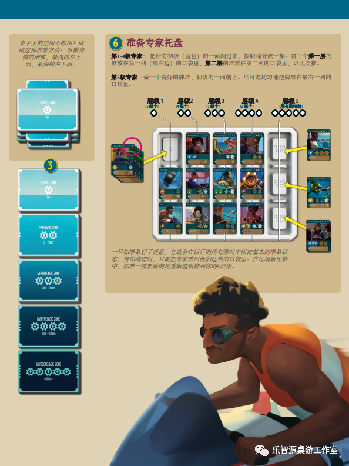
桌子上的空间不够用?试试这种堆放方法:纵横交错的堆放,最浅的在上面,最深的在下面。
〔图交叠堆放的卡牌,顶卡可见以下文字 〕
SURFACE ZONE
〔图步骤 3,五张海洋区卡牌纵向排列,卡面文字如下 〕
3
SURFACE ZONE
0m
EPIPELAGIC ZONE
0 - 200m
MESOPELAGIC ZONE
200 - 1000m
BATHYPELAGIC ZONE
1000 - 4000m
ABYSSOPELAGIC ZONE
4000m+
6 准备专家托盘
第1-4级专家:把所有初级(蓝色)的一面翻过来,按职称分成一摞。将三个第一层的堆放在第一列(最左边)的口袋里,第二层的堆放在第二列的口袋里,以此类推。
第5级专家:做一个洗好的牌堆,初级的一面朝上。尽可能均匀地把牌放在最右一列的口袋里。
〔图专家托盘,上方层级标签与箭头标注文字如下 〕
层级 1(5〔齿轮图标〕个)
层级 2(4〔齿轮图标〕个)
层级 3(3〔齿轮图标〕个)
层级 4(2〔齿轮图标〕个)
层级 5(所有〔?〕的)
一旦你准备好了托盘,它就会在以后的所有游戏中保持基本的准备状态;当你清理时,只需把专家放回他们适当的口袋里。在每场新比赛中,你唯一需要做的是重新随机排列你的5层级。
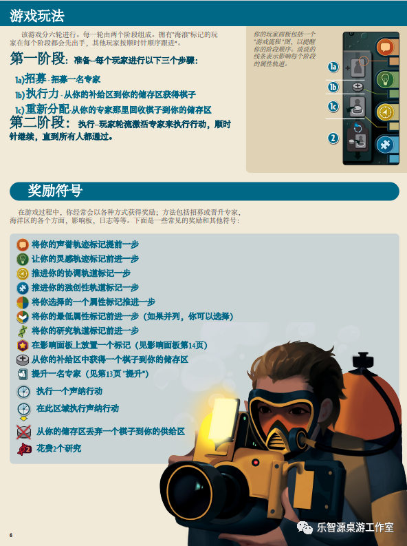
游戏玩法
该游戏分六轮进行。每一轮由两个阶段组成。拥有"海浪"标记的玩家在每个阶段都会先出手,其他玩家按照顺时针顺序跟进*。
第一阶段: 准备--每个玩家进行以下三个步骤:
1a)招募-招募一名专家
1b)执行力-从你的补给区到你的储存区获得棋子
1c)重新分配-从你的专家那里回收棋子到你的储存区
第二阶段: 执行--玩家轮流激活专家来执行行动,顺时针继续,直到所有人都通过。
你的玩家面板包括一个"游戏流程"图,以提醒你的阶段顺序。淡淡的线条表示影响每个阶段的属性轨道。
〔图玩家面板"游戏流程"图,黄色圆圈序号标注如下 〕
1a
1b
1c
2
奖励符号
在游戏过程中,你经常会以各种方式获得奖励;方法包括招募或晋升专家,海洋区的各个方面,影响板,日志等等。下面是一些常见的奖励和其他符号:
将你的声誉轨迹标记提前一步
让你的灵感轨迹标记前进一步
推进你的协调轨道标记一步
推进你的独创性轨道标记一步
将你选择的一个属性标记推进一步
将你的最低属性标记前进一步(如果并列,你可以选择)
将你的研究轨道标记前进一步
在影响面板上放置一个标记(见影响面板第14页)
从你的补给区中获得一个棋子到你的储存区
提升一名专家(见第13页"提升")
执行一个声纳行动
在此区域执行声纳行动
从你的储存区丢弃一个棋子到你的供给区
花费2个研究
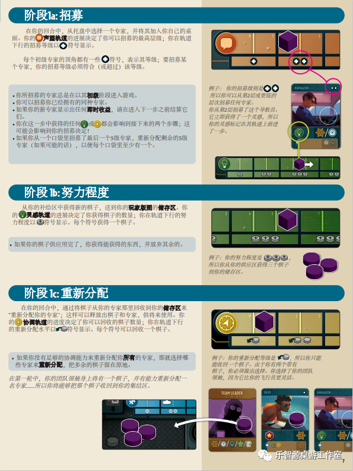
阶段1a: 招募
在你的回合中,从托盘中选择一个专家,并将其加入你自己的桌面。你的〔图标〕声望轨道的进展决定了你可以招募的最高层级;你在轨道下行的招募等级以〔图标〕符号显示。
每个初级专家的顶角都有一些〔图标〕符号,表示其等级;要招募某个专家,你的招募等级必须符合(或超过)该等级。
- 你所招募的专家总是在以其初级阶段进入游戏。
- 你可以招募你已经拥有的同种专家。
- 如果你的新专家显示出任何即时收益,请在进入下一步之前结算它们。
- 你在这一步中获得的任何〔图标〕或〔图标〕都会影响到接下来的两个步骤;这可能会影响到你的招募决定!
- 如果你从一个口袋里招募了最后一个5级专家,重新分配剩余的5级专家(如果可能的话),以便每个口袋里至少有一个。
例子:你的招募等级是〔图标〕〔图标〕,所以你可以从第2层或更低的层次招募任何专家。你从第2层招募了这个导航员。它立即获得了一个灵感,所以你的灵感标记在其轨道上前进了一步。
阶段1b: 努力程度
从你的补给区中获得新的棋子,送到你的玩家版图的储存区。你的〔图标〕灵感轨道的进展决定了你获得棋子的数量;你在轨道下行的努力程度以〔图标〕符号显示。每个符号获得一个棋子。
- 如果你的棋子供应用完了,你获得能获得的东西,并放弃其余的。
例子:你的努力程度是〔图标〕〔图标〕〔图标〕,所以你从你的供应区获得三个棋子到你的储存区。
阶段1c: 重新分配
在你的回合中,通过将棋子从你的专家那里回收到你的储存区来"重新分配你的专家";这样可以释放出棋子和专家,供将来使用。你的〔图标〕协调轨道的进度决定了你可以回收的棋子数量;你在轨道下行的重新分配水平以〔图标〕符号显示。每个符号可以回收一个棋子。
- 如果你没有足够的协调能力来重新分配你所有的专家,那就选择哪些专家来重新分配,把多余的棋子留在原地。
在第一轮中,你的团队领导身上将有一个棋子,并有能力重新分配一名专家……所以你将能够把那个棋子收回到你的集结区。
例子:你的重新分配等级是〔图标〕,所以你只能收回一个棋子。由于你有两个带有棋子,你必须做出选择。你选择了你的团队领导,因为它比你的飞行员更灵活。
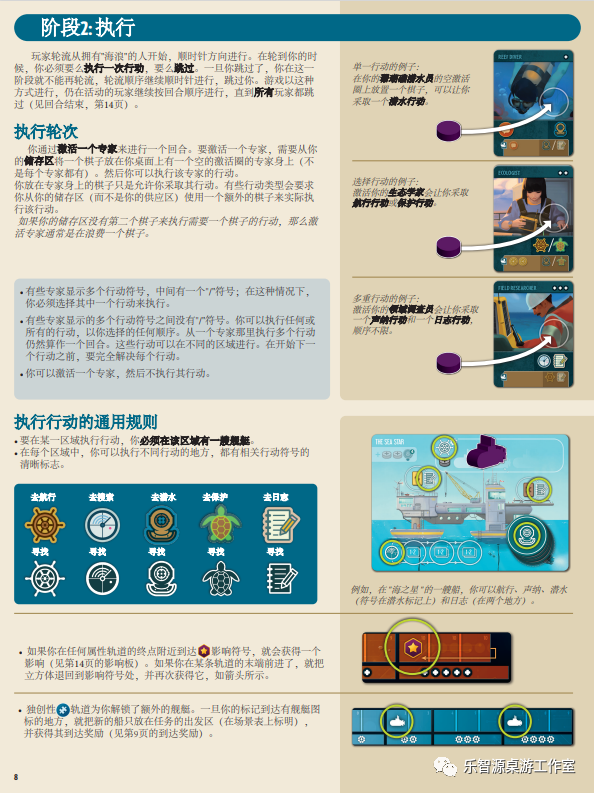
阶段2: 执行
玩家轮流从拥有"海浪"的人开始,顺时针方向进行。在轮到你的时候,你必须要么执行一次行动,要么跳过。一旦你跳过了,你在这一阶段就不能再轮流,轮流顺序继续顺时针进行,跳过你。游戏以这种方式进行,仍在活动的玩家继续按回合顺序进行,直到所有玩家都跳过(见回合结束,第14页)。
执行轮次
你通过激活一个专家来进行一个回合。要激活一个专家,需要从你的储存区将一个棋子放在你桌面上有一个空的激活圈的专家身上(不是每个专家都有)。然后你可以执行该专家的行动。
你放在专家身上的棋子只是允许你采取其行动。有些行动类型会要求你从你的储存区(而不是你的供应区)使用一个额外的棋子来实际执行该行动。
如果你的储存区没有第二个棋子来执行需要一个棋子的行动,那么激活专家通常是在浪费一个棋子。
- 有些专家显示多个行动符号,中间有一个"/"符号;在这种情况下,你必须选择其中一个行动来执行。
- 有些专家显示的多个行动符号之间没有"/"符号。你可以执行任何或所有的行动,以你选择的任何顺序。从一个专家那里执行多个行动仍然算作一个回合。这些行动可以在不同的区域进行。在开始下一个行动之前,要完全解决每个行动。
- 你可以激活一个专家,然后不执行其行动。
单一行动的例子:在你的〔?〕〔?〕〔?〕潜水员的空激活圈上放置一个棋子,可以让你采取一个潜水行动。
选择行动的例子:激活你的生态学家会让你采取执行行动或保护行动。
多重行动的例子:激活你的〔?〕〔?〕调查员会让你采取一个声纳行动和一个日志行动,顺序不限。
执行行动的通用规则
- 要在某一区域执行行动,你必须在该区域有一艘舰艇。
- 在每个区域中,你可以执行不同行动的地方,都有相关行动符号的清晰标志。
| 去执行 | 去搜索 | 去潜水 | 去保护 | 去日志 |
|---|---|---|---|---|
| 寻找 | 寻找 | 寻找 | 寻找 | 寻找 |
例如,在"海之星"的一艘船,你可以执行、声纳、潜水(符号在潜水标记上)和日志(在两个地方)。
- 如果你在任何属性轨道的终点附近到达〔图标〕影响符号,就会获得一个影响(见第14页的影响板)。如果你在某条轨道的末端前进了,就把立方体退回到影响符号处,并再次获得它,如箭头所示。
- 独创性〔图标〕轨道为你解锁了额外的舰艇。一旦你的标记到达有舰艇图标的地方,就把新的船只放在任务的出发区(在场景表上标明),并获得其到达奖励(见第9页的到达奖励)。
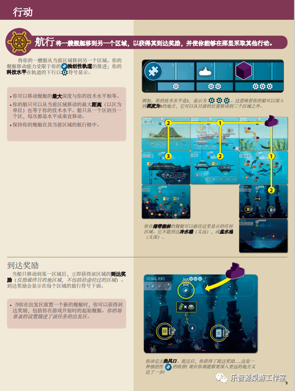
行动
航行 将一艘舰艇移到另一个区域,以获得其到达奖励,并使你能够在那里采取其他行动。
将你的一艘船从当前区域移到另一个区域。你的舰艇移动能力受限于你的 ✳独创性轨道的推进;你的科技水平在轨道的下行以 ⚙ 符号显示。
- 你可以移动舰艇的最大深度与你的技术水平相等。
- 你的船只可以从当前区域移动的最大距离(以区为单位)也等于你的技术水平。船只从一个区到另一个区,每次都是水平或垂直移动。
- 保持你的舰艇在其当前区域的航行格中。
例如,你的科技水平是3,表示为 ⚙⚙⚙。这意味着你的船可以深入到深度为3的地方,它可以从目前的位置移动到三个区域之外。
你在海带森林的舰艇可以前往这里显示的任何区域。它不能到达冷水〔?〕(太远),或盐水〔?〕(太深)。
到达奖励
当船只移动到某一区域后,立即获得该区域的到达奖励(仅指最终目的地区域,不包括沿途经过的区域)。到达奖励会显示在每个区域的旅行符号下面。
- 当你在出发区放置一个新的舰艇时,你可以获得到达奖励,包括你在游戏开始时的起始舰艇。你的场景表的设置描述了该任务的出发区。
THE FINAL VENTS
你决定去热风口。抵达后,你获得了抵达奖励……这是一种独创性 ✳ 的收获!现在你离能够更深入更远的地方又近了一步!
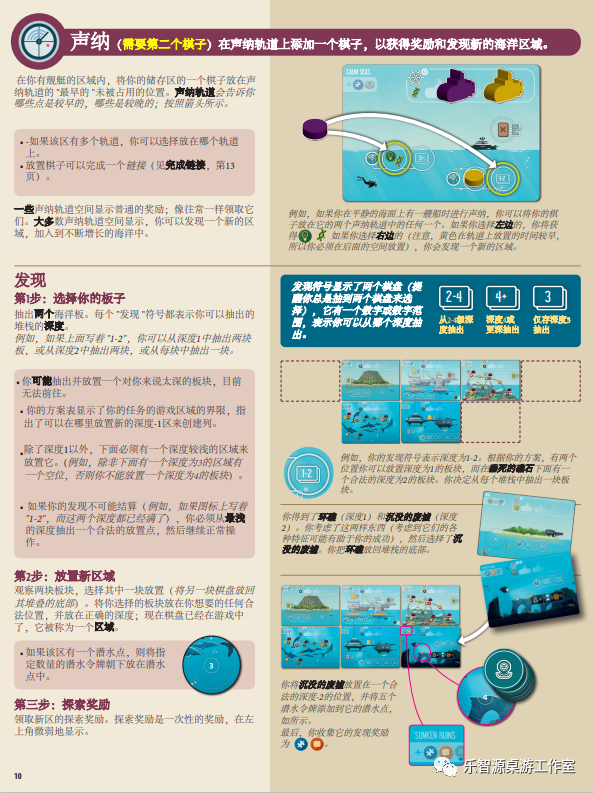
声纳 (需要第二个棋子) 在声纳轨道上添加一个棋子,以获得奖励和发现新的海洋区域。
在你有舰艇的区域内,将你的储存区的一个棋子放在声纳轨道的"最早的"未被占用的位置。声纳轨道会告诉你哪些点是较早的,哪些是较晚的;按照箭头所示。
- 如果该区有多个轨道,你可以选择放在哪个轨道上。
- 放置棋子可以完成一个链接(见完成链接,第13页)。
一些声纳轨道空间显示普通的奖励;像往常一样领取它们。大多数声纳轨道空间显示,你可以发现一个新的区域,加入到不断增长的海洋中。
CALM SEAS
例如,如果你在平静的海面上有一艘船时进行声纳,你可以将你的棋子放在它的两个声纳轨道中的任何一个。如果你选择左边的,你将获得〔绿色灯泡图标〕〔绿色螺旋图标〕。如果你选择右边的(注意,黄色在轨道上放置的时间较早,所以你必须在后面的空间放置),你会发现一个新的区域。
发现
第1步: 选择你的板子
抽出两个海洋板。每个"发现"符号都表示你可以抽出的堆栈的深度。
例如,如果上面写着"1-2",你可以从深度1中抽出两块板,或从深度2中抽出两块,或从每块中抽出一块。
- 你可能抽出并放置一个对你来说太深的板块,目前无法前往。
- 你的方案表显示了你的任务的游戏区域的界限,指出了可以在哪里放置新的深度-1区来创建列。
- 除了深度1以外,下面必须有一个深度较浅的区域来放置它。(例如,除非下面有一个深度为3的区域有一个空位,否则你不能放置一个深度为4的板块)。
- 如果你的发现不可能结算(例如,如果图标上写着"1-2",而这两个深度都已经满了),你必须从最浅的深度抽出一个合法的放置点,然后继续正常操作。
第2步: 放置新区域
观察两块板块,选择其中一块放置(将另一块棋盘放回其堆叠的底部)。将你选择的板块放在你想要的任何合法位置,并放在正确的深度;现在棋盘已经在游戏中了,它被称为一个区域。
- 如果该区有一个潜水点,则将指定数量的潜水令牌朝下放在潜水点中。
第三步: 探索奖励
领取新区的探索奖励。探索奖励是一次性的奖励,在左上角微弱地显示。
发现符号显示了两个棋盘(提醒你总是抽到两个棋盘来选择),它有一个数字或数字范围,表示你可以从哪个深度抽出。
2-4:从2-4每深度抽出
4+:深度4或更深抽出
3:仅存深度3抽出
例如,你的发现符号表示深度为1-2。根据你的方案,有两个位置你可以放置深度为1的板块,而在〔?〕死的礁石下面有一个合法的深度为2的板块。你决定从每个堆栈中抽出一块板块。
你得到了环礁(深度1)和沉没的废墟(深度2)。你考虑了这两样东西(考虑到它们的各种特征可能有助于你的成功),然后选择了沉没的废墟。你把环礁放回堆栈的底部。
SUNKEN RUINS
你将沉没的废墟放置在一个合法的深度-2的位置,并将五个潜水令牌添加到它的潜水点,如所示。最后,你收集它的发现奖励为〔蓝色✳图标〕〔橙色气泡图标〕。
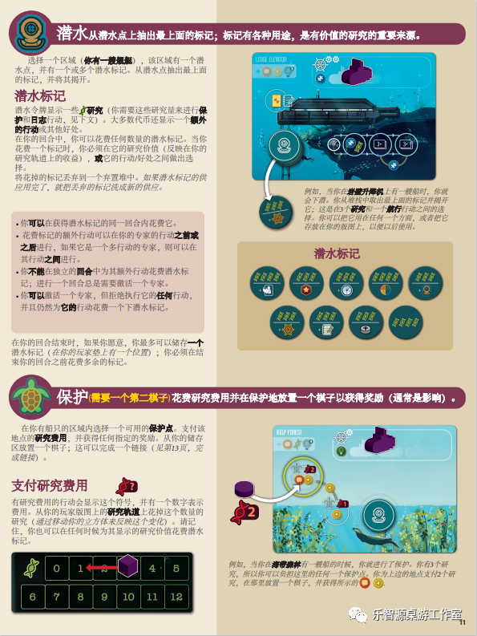
潜水 从潜水点上抽出最上面的标记;标记有各种用途,是有价值的研究的重要来源。
选择一个区域(你有一艘船艇),该区域有一个潜水点,并有一个或多个潜水标记。从潜水点抽出最上面的标记,并将其揭开。
潜水标记
潜水令牌显示一些〔研究图标〕研究(你需要这些研究量来进行保护和日志行动,见下文)。大多数代币还显示一个额外的行动或其他好处。
在你的回合中,你可以花费任何数量的潜水标记。当你花费一个标记时,你必须在它的研究价值(反映在你的研究轨道上的收益),或它的行动/好处之间做出选择。
将花掉的标记丢弃到一个弃置堆中。如果潜水标记的供应用完了,就把丢弃的标记洗成新的供应。
- 你可以在获得潜水标记的同一回合内花费它。
- 花费标记的额外行动可以在你的专家的行动之前或之后进行,如果它是一个多行动的专家,则可以在其行动之间进行。
- 你不能在独立的回合中为其额外行动花费潜水标记;进行一个回合总是需要激活一个专家。
- 你可以激活一个专家,但拒绝执行它的任何行动,并且仍然为它的行动花费一个下潜水标记。
在你的回合结束时,如果你愿意,你最多可以储存一个潜水标记(在你的玩家垫上有一个位置);你必须在结束你的回合之前花费多余的标记。
图示:版图区域(左上角英文地名模糊不清:〔?……?〕);箭头指向放大的潜水标记,其上标有"2研究"。
例如,当你在岩壁升降机上有一艘船时,你就会下潜。你从堆栈中取出最上面的标记并揭开它;这是在2个研究和一个航行行动之间的选择。你可以把它用在任何一个方面,或者把它存放在你的版图上,以便以后使用。
图示:潜水标记(9 枚标记样例)
保护 (需要一个第二棋子)花费研究费用并在保护地放置一个棋子以获得奖励(通常是影响)。
在你有船只的区域内选择一个可用的保护点。支付该地点的研究费用,并获得任何指定的奖励。从你的储存区放置一个棋子;这可以完成一个链接(见第13页,完成链接)。
支付研究费用 〔研究费用图标〕
有研究费用的行动会显示这个符号,并有一个数字表示费用。从你的玩家版图上的研究轨道上花掉这个数量的研究(通过移动你的立方体来反映这个变化)。请记住,你也可以在任何时候为其显示的研究价值花费潜水标记。
图示:研究轨道,数字为 0、1、2、3、4、5 / 6、7、8、9、10、11、12;紫色立方体位于"3",红色箭头指向"1"。
图示:KELP FOREST(海藻森林)版图区域;红圈标注上方保护点(奖励方块上标"2"),其下方保护点标有"1";左侧研究费用图标旁标有"2"。
例如,当你在海藻森林有一艘船的时候,你就进行了保护。你有3个研究,所以你可以负担这里的任何一个保护点。你为上边的地点支付2个研究,在那里放置一个棋子,并获得所示的〔橙色方块与黄色圆脸图标〕。
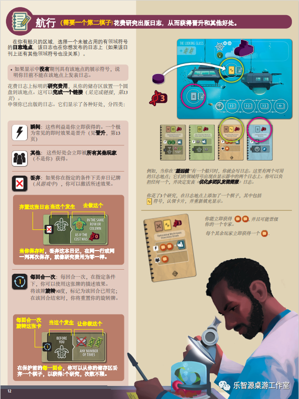
航行 (需要一个第二棋子)花费研究出版日志,从而获得晋升和其他好处。
在你有船只的区域,选择一个未被占用的有领域符号的日志地点。该日志也在你想发布的日志上(如果该期刊上还有其他领域符号也没关系)。
- 如果显示中没有期刊具有该地点的展示符号,说明你目前不能在该地点上发表日志。
花费日志上标明的研究费用,从你的储存区放置一个圆盘到该地点。这可以完成一个链接(见完成链接,第13页)。
领取你已出版的日志。它们显示了各种好处,分四类:
瞬间:这些利益是你立即获得的。一个极为罕见的即时效果是晋升(见晋升,第13页)
其他:这些好处会立即被所有其他玩家(不是你)获得。
丢弃:如果你在指定的条件下丢弃日记牌(从游戏中),你可以激活所述效果。
弃置这张日志 当这个发生 去做这个
图示:日志卡,卡面英文为"IN THE SAME ROW OR COLUMN"、"AS IF THE COST WAS",并标有"0"图标。
当你保存时,丢弃这本日记,在同一行或同一列再次保存,就像研究费用为零一样。
每回合一次:每回合一次,在指定条件下,你可以使用这张卡的描述效果。将该牌旋转90度,标记为该回合已用完;在该回合结束时,你将重置你的旋转牌。
每回合一次旋转这张卡 当这个发生 让你做这个
图示:日志卡,卡面英文为"BEFORE YOU"、"ANY NUMBER OF TIMES",并标有"1"旋转图标。
在保护前的每一回合,你可以从你的储存区丢弃一个棋子,以获得1个研究,次数不限。
图示:版图区域(左上角英文地名模糊:〔?……?〕);红圈与黄圈分别标注两个日志地点;左侧研究费用图标旁标有"3";下方为日志展示排槽位。
图示:四张日志卡;黄圈标注第三张卡,红圈标注第四张卡。
例如,当在"望远镜"有一个船只时,你就会写日志。这里有两个可用的日志地点;它们的领域符号出现在显示器中的两个日志上。你可以负担任何一个,并决定发表"优化多团队资源勘探"日志。
你花了3个研究,在日志地点上添加了一个棋子,其中包括〔黄色图标〕符号,认领卡片,并重新填充显示。
图示:一张日志卡(卡名英文模糊:〔?……?〕)。
你能立即获得〔两个橙色圆形图标〕,并且可能晋级你的一个专家。
每个其余玩家立即获得一个〔橙色圆形图标〕。
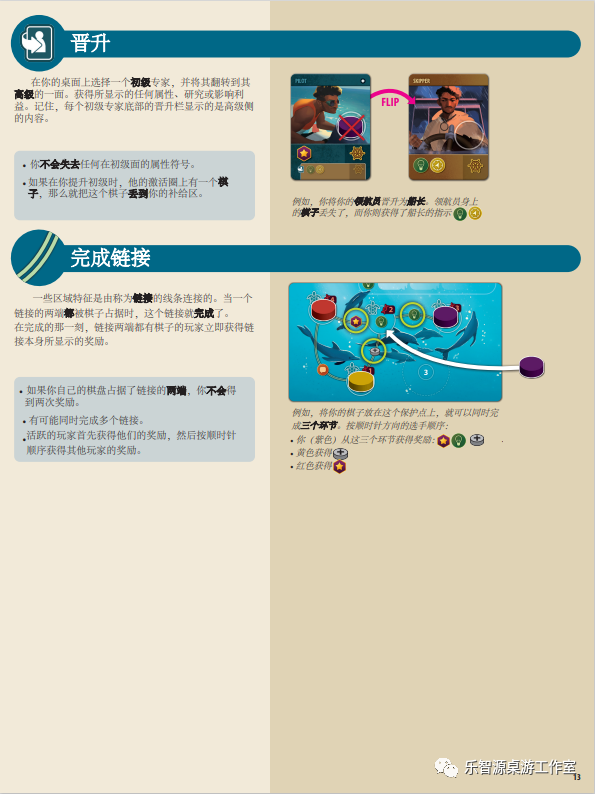
影响版图
每个场景卡上的影响板代表了你在海洋中的努力对整个世界产生的积极影响。
早期任务中的影响板是相当简单的，但随着你在剧情中的进展，你会发现游戏中这方面的影响和机会是非常多的。
棋盘是一个六角形的网格，显示各种奖励和其他好处。当你在游戏中通过任何方式获得影响★时，从你的补给堆中拿出一个标记放在一个空的六面体上，并获得印在那里的任何奖励。
你只能在有入口箭头指向的六边形中放置，或在任何其他被占领的六边形相接触的六边形中放置。
- 占据特定颜色的六角形（在计分图例中标明）将在游戏结束时获得分数。
- 一个有∞符号的六角形可以容纳任何数量的标记（如果你需要空间，就把它们放在所附的较大区域）。
影响板插图示例：例如，你获得了一次冲击，所以你可以在冲击板上放置一个标记。所有被圈起来的六边形都是合格的位置，因为它们要么是在一个人口箭头处，要么是在一个被占领的六边形旁边。
箭头标注：分数图例
图注（左下提示框）：请记住，在某些六角形区域的标记会在游戏结束时得分！
图注（右下提示框）：一旦∞六角被填满，任何数量的标记都可以进入附属区域，获得与∞六角相同的分数。
回合结束
一旦所有玩家都通过了，这一轮就结束了。
如果这是第六轮，游戏立即结束；继续进行最后的计分。你可以知道这是否是第六轮，因为每个玩家在他们的桌面上都有七个专家（包括他们的团队领导）。
如果游戏还没有结束，所有的玩家都会重置他们的每轮一次的日志。顺时针传递"海浪"以建立一个新的起始玩家，然后新的一轮开始。
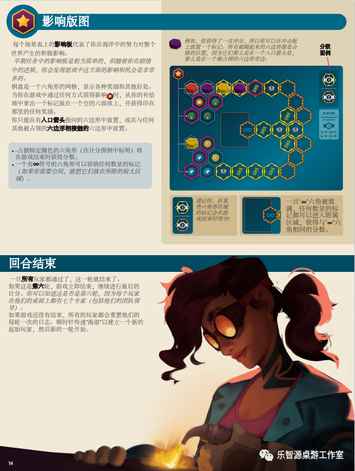
晋升
在你的桌面上选择一个初级专家，并将其翻转到其高级的一面。获得所显示的任何属性、研究或影响利益。记住，每个初级专家底部的晋升栏显示的是高级侧的内容。
- 你不会失去任何在初级面的属性符号。
- 如果在你提升初级时，他的激活圆上有一个棋子，那么就把这个棋子丢到你的补给区。
插图：两张专家卡（卡名 PILOT、SKIPPER），中间粉色箭头标注"FLIP"。
图注：例如，你将你的领航员晋升为船长。领航员身上的棋子丢失了，而你则获得了船长的指示〔灯泡图标〕〔硬币图标〕
完成链接
一些区域特征是由称为链接的线条连接的。当一个链接的两端都被棋子占据时，这个链接就完成了。在完成的那一刻，链接两端都有棋子的玩家立即获得链接本身所显示的奖励。
- 如果你自己的棋盘占据了链接的两端，你不会得到两次奖励。
- 有可能同时完成多个链接。
- 活跃的玩家首先获得他们的奖励，然后按照顺时针顺序获得其他玩家的奖励。
插图：海豚区域版图（链接与棋子标记）。
图注：例如，将你的棋子放在这个保护点上，就可以同时完成三个环节。按顺时针方向的选手顺序：
- 你（紫色）从这三个环节获得奖励：〔星形图标〕〔灯泡图标〕〔硬币+图标〕
- 黄色获得〔硬币+图标〕
- 红色获得〔星形图标〕
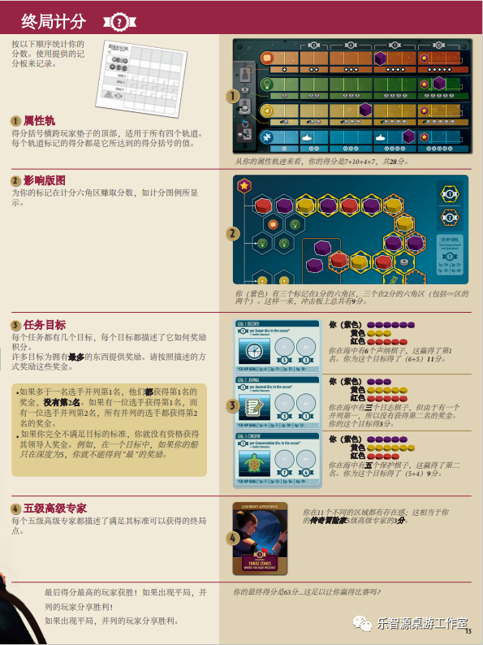
终局计分
按以下顺序统计你的分数。使用提供的记分板来记录。
〔记分板便笺〕
1 属性轨
得分括号横跨玩家垫子的顶部,适用于所有四个轨道。每个轨道标记的得分都是它所达到的得分括号的值。
〔玩家面板上的四条属性轨,序号标记①〕
从你的属性轨迹来看,你的得分是7+10+4+7,共28分。
2 影响版图
为你的标记在计分六角区赚取分数,如计分图例所显示。
〔影响版图计分示例,序号标记②〕
你(紫色)有三个标记在1分的六角区,三个在2分的六角区(包括∞区的两个)。这样一来,冲击板上总共有9分。
3 任务目标
每个任务都有几个目标,每个目标都描述了它如何奖励积分。
许多目标为拥有最多的东西提供奖励。请按照描述的方式奖励这些奖金。
• 如果多于一名选手并列第1名,他们都获得第1名的奖金,没有第2名。如果有一位选手获得第1名,而有一位选手并列第2名,所有并列的选手都获得第2名的奖金。
• 如果你完全不满足目标的标准,你就没有资格获得其领导人奖金。例如,在一个目标中,如果你的船只只在深度为5,你就不能得到"最"的奖励。
〔三张任务目标卡(卡底带粉色合作目标横幅),序号标记③〕
GOAL 1 DISCOVER;1 per Sonar disc in the ocean*;+ leader bonus;横幅:*CO-OP GOAL | 1p: 6〔?〕+ | 2p: 11+ | 3p: 15〔?〕+ | 4p: 18〔?〕+
你(紫色)●●●●●● / 黄色●●● / 红色●●●●●
你在海中有6个声呐棋子,这赢得了第1名。你为这个目标得了 (6+5)11分。
GOAL 2 JOURNAL;1 per Journal disc in the ocean*;+ leader bonus;横幅:*CO-OP GOAL | 1p: 5〔?〕+ | 2p: 7+ | 3p: 10〔?〕+ | 4p: 12〔?〕+
你(紫色)●●● / 黄色●●●●● / 红色●●●●●
你在海中有三个日志棋子,但由于有一个并列第一,所以没有获得第二名的奖金。你的这个目标得3分。
GOAL 3 CONSERVE;1 per Conservation disc in the ocean*;+ leader bonus;横幅:*CO-OP GOAL | 1p: 7+ | 2p: 12+ | 3p: 16〔?〕+ | 4p: 19〔?〕+
你(紫色)●●●●● / 黄色●●●●●● / 红色●●●●
你在海中有五个保护棋子,这赢得了第二名。你为这个目标得了 (5+4)9分。
4 五级高级专家
每个五级高级专家都描述了满足其标准可以获得的终局点。
〔专家卡,序号标记④〕
卡牌:LEGENDARY ADVENTURER;卡底横幅:5TH EXPERT〔?〕 / THREE DOTS / WHERE YOU HAVE PRESENCE〔?〕
你在11个不同的区域都有存在感;这相当于你的传奇冒险家5级高级专家的3分。
最后得分最高的玩家获胜!如果出现平局,并列的玩家分享胜利!
如果出现平局,并列的玩家分享胜利。
你的最终得分是63分...这足以让你赢得比赛吗?
[页脚页码:15]
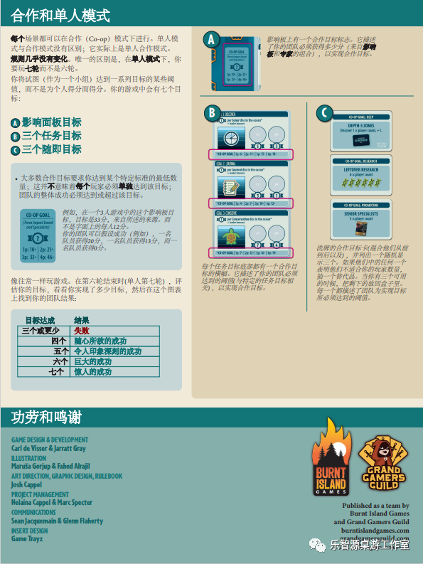
合作和单人模式
每个场景都可以在合作(Co-op)模式下进行。单人模式与合作模式没有区别;它实际上是单人合作模式。
规则几乎没有变化。唯一的区别是,在单人模式下,你要玩七轮而不是六轮。
你将试图(作为一个小组)达到一系列目标的某些阈值,而不是为个人得分而得分。你的游戏中会有七个目标:
- Ⓐ 影响面板目标
- Ⓑ 三个任务目标
- Ⓒ 三个随即目标
• 大多数合作目标要求你达到某个特定标准的最低数量;这并不意味着每个玩家必须单独达到该目标;团队的整体成功必须达到或超过该目标。
〔CO-OP GOAL 卡片〕
CO-OP GOAL;(From impact board and Specialists);? 徽记;1p: 10+ | 2p: 21+ / 3p: 33+ | 4p: 46+
例如,在一个3人游戏中的这个影响板目标,目标是33分,来自所述的来源。而不是字面上的每人12分。
你的团队可以假设成功(例如),一名队员获得20分,一名队员获得13分,而一名队员获得0分。
像往常一样玩游戏。在第六轮结束时(单人第七轮),评估你的目标,看看你实现了多少目标,然后在这个图表上找到你的团队结果:
| 目标达成 | 结果 |
|---|---|
| 三个或更少 | 失败 |
| 四个 | 随心所欲的成功 |
| 五个 | 令人印象深刻的成功 |
| 六个 | 巨大的成功 |
| 七个 | 惊人的成功 |
〔影响板一角,CO-OP GOAL 框以粉色框出,序号标记Ⓐ〕
影响板上有一个合作目标标志。它描述了你的团队必须获得多少分(来自影响板和专家的组合),以实现合作目标。
〔三张任务目标卡,底部合作目标横幅以粉色框出,序号标记Ⓑ〕
GOAL 1 DISCOVER;1 per Sonar disc in the ocean*;+ leader bonus;横幅:*CO-OP GOAL | 1p: 6〔?〕+ | 2p: 11+ | 3p: 15〔?〕+ | 4p: 18〔?〕+
GOAL 2 JOURNAL;1 per Journal disc in the ocean*;+ leader bonus;横幅:*CO-OP GOAL | 1p: 5〔?〕+ | 2p: 7+ | 3p: 10〔?〕+ | 4p: 12〔?〕+
GOAL 3 CONSERVE;1 per Conservation disc in the ocean*;+ leader bonus;横幅:*CO-OP GOAL | 1p: 7+ | 2p: 12+ | 3p: 16〔?〕+ | 4p: 19〔?〕+
每个任务目标底部都有一个合作目标的横幅。它描述了你的团队必须达到的阈值(与特定的任务目标相关),以实现合作目标。
〔三张合作目标卡,序号标记Ⓒ〕
CO-OP GOAL: HELP;DEPTH 5 ZONES;Discover 1 x player count, + 1.;右下角小字:〔?……?〕
CO-OP GOAL: RESEARCH;LEFTOVER RESEARCH;6 x player count
CO-OP GOAL: PROMOTION;SENIOR SPECIALISTS;5 x player count
洗牌的合作目标卡(混合他们从前到后以及),并列出一个随机显示三个。如果他们中的任何一个表明他们不适合你的玩家数量,抽一个替代品。当你有三个可用的时候,把剩下的放回盒子里。每一个都描述了团队为实现目标所必须达到的阈值。
功劳和鸣谢
GAME DESIGN & DEVELOPMENT
Carl de Visser & Jarratt Gray
ILLUSTRATION
Maruša Gorjup & Fahed Alrajil
ART DIRECTION, GRAPHIC DESIGN, RULEBOOK
Josh Cappel
PROJECT MANAGEMENT
Helaina Cappel & Marc Specter
COMMUNICATIONS
Sean Jacquemain & Glenn Flaherty
INSERT DESIGN
Game Trayz
〔Burnt Island Games 与 Grand Gamers Guild 标志〕
Published as a team by
Burnt Island Games
and Grand Gamers Guild
burntislandgames.com
grandgamersguild.com
[页脚页码:16]